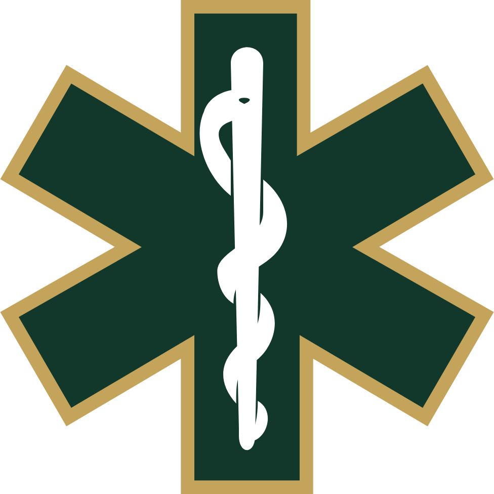

Hub CPD handoutHeart Failure in Pre-hospital Care
JRCALC Heart Failure · GTN · Furosemide · Oxygen
Five key points to remember
Three presentations — not one protocol
Acute pulmonary oedema
Sudden wet lungs, severe dyspnoea, with or without swollen legs. Sit fully upright. Oxygen 94–98%.
Peripheral oedema
Fluid-loaded: legs, abdomen, scrotum, raised JVP, pleural fluid. Lungs may be clear in isolated right failure.
Cardiogenic shock
5–8% of AHF. Often STEMI if new. No GTN, no furosemide, do not dump fluid. TIME-CRITICAL.
Red flags versus think again
Supports heart failure
- Orthopnoea — slept in the chair
- PND — wakes gasping, better sitting up
- New dyspnoea with previous MI, hypertension or angina
- New oedema with breathlessness
- Pink or white frothy sputum, basal crackles ± wheeze
Reconsider
- COPD flare, pneumonia, PE
- Sepsis — AHF is frequently mistaken for it
- A normal 12-lead is unusual in heart failure
- If you cannot tell COPD from AHF, salbutamol may be considered
GTN — two gates
Indication — JRCALC Heart Failure
Consider GTN in acute heart failure with ischaemia or uncontrolled hypertension.
Spray: 400–800 micrograms (1–2 sprays). Assess over 5 minutes. Repeat 5–10 min if SBP still >110. Maximum 6 sprays (2.4 mg) in AHF.
Safety — do not give
SBP <110 mmHg in AHF, or symptomatic hypotension. Hypovolaemia. Unconscious. Head trauma / cerebral haemorrhage. PDE5 inhibitors in the last 24 hours. Known severe aortic or mitral stenosis.
90 mmHg is the angina / MI table — a different indication in the same monograph.
Furosemide and morphine
Furosemide
Consider 40 mg IV slowly over 2 minutes for pulmonary oedema / respiratory distress in AHF. Adults 18+. No repeat. Not in cardiogenic shock. Consider when the journey is long.
Morphine
Do not use routinely. Associated with higher mortality in HF registries. Consider for chest pain, or if a palliative plan already lists it.
On-scene map
Hypotensive or hypoperfused
- Treat as cardiogenic shock
- No GTN, no furosemide
- STOP and THINK before IV fluids
- 12-lead — often STEMI
- TIME-CRITICAL, prefer CCU
Congested, blood pressure holding
- Sit fully upright immediately — they will slump, sit them up again
- Oxygen 94–98%
- GTN only if both gates are open
- Consider furosemide 40 mg slow IV
JRCALC: if they have heart failure or valve disease, STOP and THINK before intravenous fluids — especially large or rapid volumes. Positioning lowers left atrial pressure; it is treatment, not comfort.
Check yourself
| Question | Answer |
|---|---|
| SBP threshold below which you must not give GTN in AHF? | 110 mmHg — or any symptomatic hypotension. 90 mmHg is the ACS / angina figure. |
| Every AHF patient with SBP over 90 gets GTN? | False. Indication is AHF with ischaemia or uncontrolled hypertension, and SBP over 110. |
| Known HF, collapsed, hypotensive — fluids? | STOP and THINK. Cardiogenic shock is not an empty tank. AHF is often misread as sepsis. |
| Furosemide dose in adult pulmonary oedema? | 40 mg IV slowly over 2 minutes. No repeat. Not in cardiogenic shock. |
| Routine morphine for pulmonary oedema? | No. Consider it for chest pain, or if a palliative plan includes it. |
| First physical treatment for the congested, breathless patient? | Sit fully upright immediately, and keep repositioning them. |
Handover that receiving staff can use
“Wet and hypertensive, GTN two sprays, SBP still 150, furosemide 40 mg, 12-lead no STEMI.”
Or: “Shocked, crackles, SBP 86, no nitrates, no diuretic, possible STEMI, TIME-CRITICAL.” Say congestion or shock. Say why GTN was given or withheld.
JRCALC Plus Heart Failure v4.33; JRCALC Glyceryl Trinitrate (updated 10 December 2025); JRCALC Furosemide; JRCALC Oxygen.
Mebazaa et al. Eur J Heart Fail 2015 (pre-hospital AHF consensus; vasodilators if SBP ≥110).
NICE CG187 Acute heart failure. Ponikowski et al. ESC 2016. Wakai et al. Cochrane 2013.
Self-guided slides: add ?course=hf&view=self to the deck URL. This is not a substitute for the live JRCALC entry or Trust policy.